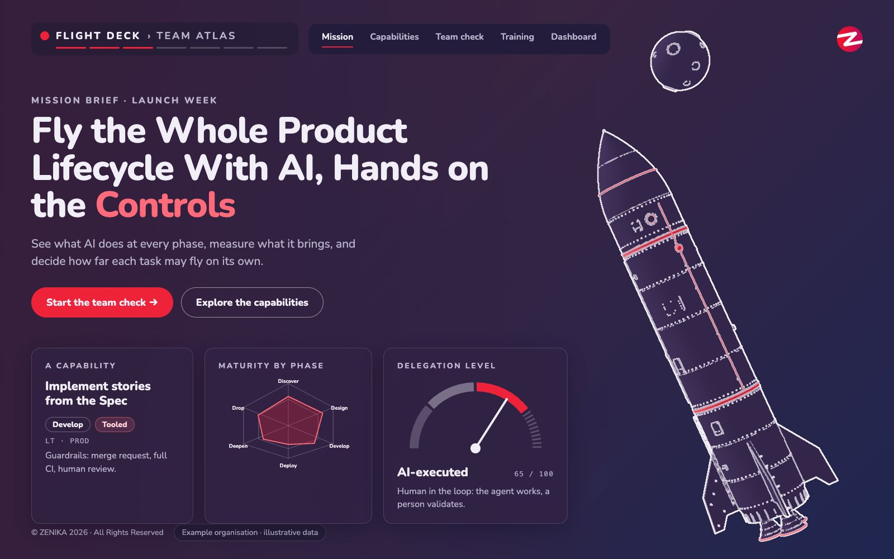
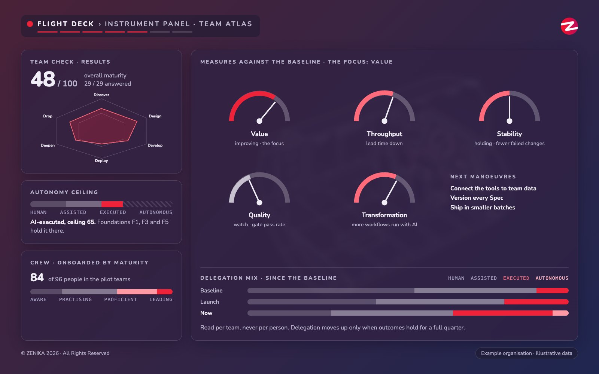

Ceci est la version de lecture. Ouvrez ce fichier dans Chrome ou Safari, sur ordinateur ou sur téléphone, pour la version animée.
Ceci est la version de lecture. Ouvrez ce fichier dans Chrome ou Safari, sur ordinateur ou sur téléphone, pour la version animée.
Du pilote au passage à l'échelle, un programme pour chaque équipe produit
Zenika · 2026
Objectifs de la transformation
À la fin du programme, chaque équipe produit travaille avec l'IA comme copilote natif. Le travail circule sans rupture à chaque étape du PDLC, et toute l'organisation livre plus vite.
La phase 1 mène à une cible
Ce qu'un diagnostic révèle souvent
Ce que dit la cible
Ce que nous voyons sur le marché
Quatre piliers complémentaires
À vous
Vos réponses alimentent le registre des risques du programme et les raisons de démarrer maintenant.
Focus sur la mesure
Focus sur le PDLC
Focus sur le PDLC
Un cadre de Spec-Driven Development fait passer l'IA de la génération de code au travail dans un contexte entretenu, guidé par des spécifications explicites et vérifiables.
Le harnais du PDLC
Les Definitions of Ready et of Done deviennent explicites et vivent dans le flux de travail, pour que les Specs entre deux phases respectent des critères de qualité fixés.
Focus sur le PDLC
Le contrat
Des critères propres à chaque tâche décident de la part que la machine peut en prendre. Exemple : la capability assistant de code, avec des scores donnés à titre d'illustration.
Atelier
Focus sur la plateforme
Focus sur la plateforme
Focus sur la formation
Ce qui fait la valeur de l'IA
Chacun sait quels outils sont permis, pour quoi faire et pourquoi
Les données internes sont justes, complètes et à jour
Les outils lisent le code, les docs et les décisions de l'équipe
Chaque changement est versionné, relu et facile à annuler
Des changements petits, livrés souvent, qui échouent petit
Les équipes mettent l'IA au service des utilisateurs, pas du volume produit
Une plateforme interne commune porte les gains d'une équipe à l'autre
La phase 1 mesure où en est chaque équipe sur les sept.
À vous
Vos questions fixent l'ordre du jour de la prochaine séance de travail.
Focus sur l'engagement


Prochaines étapes
| Mois 1 | Mois 2 et 3 | Trimestre suivant | |
|---|---|---|---|
| PDLC | Poser les gates et les modèles de spec avec une première équipe | Faire tourner la roue dans chaque équipe pilote | L'étendre aux équipes produit suivantes |
| Platform | Ouvrir les outils et les modèles dont le pilote a besoin, avec des garde-fous | Connecter les outils aux données des équipes | L'opérer comme une seule plateforme pour toutes les équipes |
| Mesure | Prendre la mesure de départ : qualité, flux et valeur | Lire les premiers résultats par rapport à elle | Décider où étendre, sur les faits |
| Équipes | Nommer les rôles et lancer les parcours en autonomie | Accompagner les équipes pilotes sur leur propre travail | Former les équipes suivantes avec les leçons du pilote |
Tournez votre téléphone pour l’expérience immersive complète